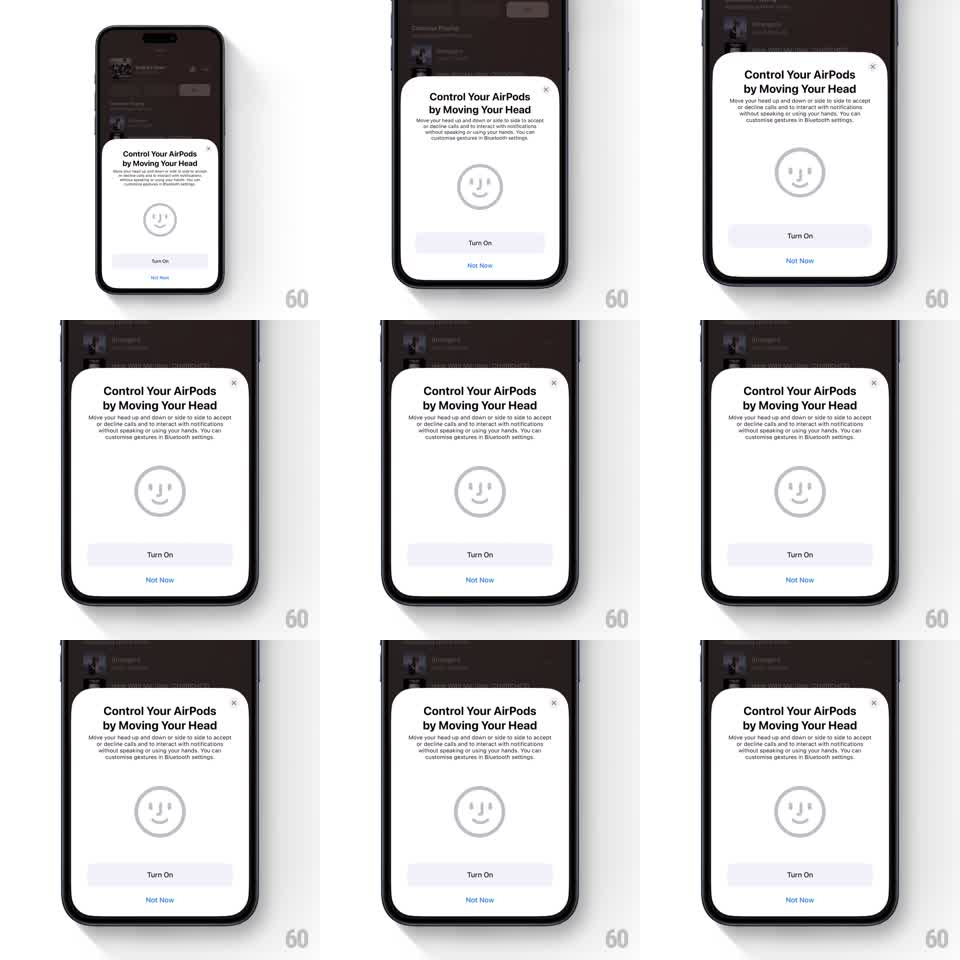

Media
Frame-by-frame

Rebuild this animation 1:1: Apple's AirPods head-gesture modal - "Control Your AirPods by Moving Your Head" sheet with a looping line-art face that demonstrates the nod/shake gestures, above Turn On and Not Now buttons.

Rebuild this animation 1:1: Apple's AirPods head-gesture modal - "Control Your AirPods by Moving Your Head" sheet with a looping line-art face that demonstrates the nod/shake gestures, above Turn On and Not Now buttons. ## Integration Integration: stack-agnostic spec - springs given as stiffness/damping, timed motions as duration + curve; map every value to your framework and animation library of choice. ## Scene Dimmed settings screen with a white modal sheet: X close, title "Control Your AirPods by Moving Your Head", body copy about accepting/declining calls with head gestures, a large circular line-art face (eyes + smile) center, "Turn On" filled button, "Not Now" text button. ## Motion spec Pattern: looping gesture demo illustration. - Sheet entrance: slides up (spring ~320/28, ~300ms) over a 40% dim; the face scales in 0.8 -> 1 (250ms). - Face loop (~2.4s): the head tilts side to side (rotate ±12deg, ease-in-out, a "no" shake), pauses 400ms, then nods (translateY ±6px with slight rotate, "yes"), pauses, repeats. - Face features stay perfectly still relative to the head - the whole illustration moves as one. - Buttons static; Turn On pulses its fill very subtly (opacity 1 -> 0.92, 2s) to draw the eye. ## Calibration - The loop demonstrates BOTH gestures (shake and nod) with a rest between them - not a continuous wobble. - Motion lives only inside the illustration circle; the sheet never moves after entrance. ## Reduced motion Static face; a small caption swap indicates the gestures. ## Don't miss - Line-art style: thin gray strokes, no fill, friendly smile. - "Not Now" is a plain text button under the filled Turn On - hierarchy is clear.